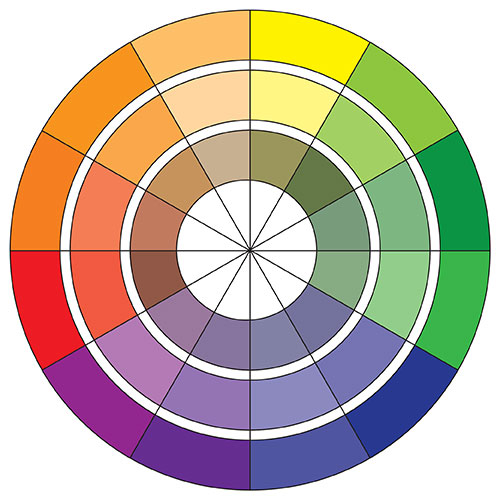

I created a color wheel using Adobe Illustrator. I created concentric circles and diameters using geometry. I painted the wheel with all 12 colors, and a tint and a shade of each color. This illustrates the concepts of primary, secondary and tertiary colors, and can be used to find complementary colors.
The first composition is achromatic. I used 7 different values as well as white and black, for a total of 9 colors of tumbling squares; the black is in the foreground and the white in the background. I placed a star and triangles as additional visual elements.
The second composition uses basic primary colors, with one pair of basic colors (blue and red) for the shapes (octagons) and the third (yellow) for the background. The color of the shapes range through the tertiary and secondary colors as the transition from red to blue. The shapes look like they are turning.
The third composition uses two complementary colors (red-violet and yellow-green) of overlapping starbursts with radiating triangles. The different hues make it look like the triangles are shooting out of the stars.
The fourth composition shows analogous colors with a cool relationship. The blue and green circles over squares have different hues. The outer shapes are smaller than the ones that are more central, giving the sense of movement and depth.
The fifth composition shows analogous colors with a warm relationship. The background is orange and the circles range from yellow to red.
|
 |